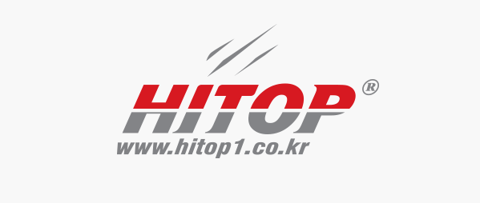
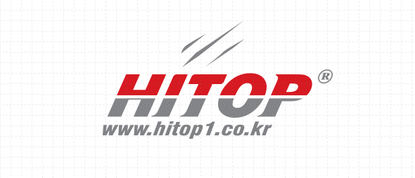
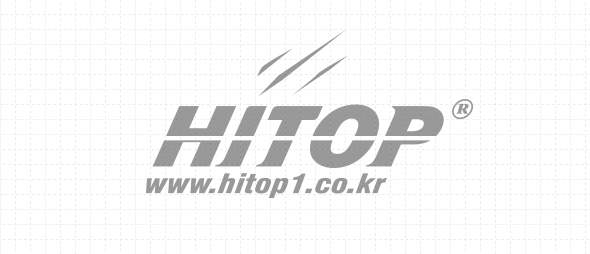

워드마크 기본형
워드마크 형식으로 HITOP을 상하로 분리하고 배색을 달리하여 가독성이 용이하도록 표현했다. 아래를 회색으로 표시하고, 상부를 붉은 색으로 표시하여 포인트를 줌으로서 삭막한 회색도시를 컬러풀한 친환경적 디자인 도시로 변화시키고자 하는 의지를 표현하였다. 또한 붉은색은 강렬한 하이탑의 의지를 표시하며 위에 세줄로 표시된 역동적인 선은 특수 포장재를 초석으로 하는 하이탑의 열정과 일류기업으로 도약하고자 하는 의지를 상징한다.
그리드 시스템
 심벌마크 컬러
전용색상은 하이탑의 아이덴티티를 구성하는 중요 요소입니다. 제시된 기준에 맞춰 변형, 왜곡이 없이 적용되어야합니다.